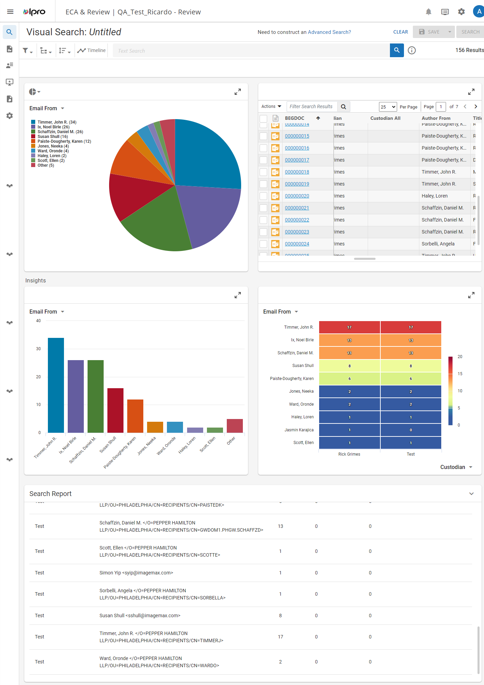
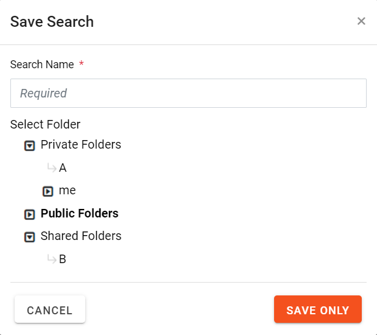
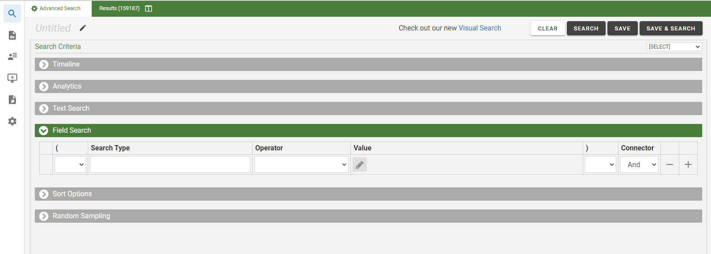

This section describes how to save both a Visual Search and an Advanced Search. To learn more about managing saved searches, see Work with Saved Searches.
To save a search configured on the Visual Search dashboard, follow the instructions below:
-
In , click a case card.

-
Click the Enter Case button in the bottom-right corner. The Visual Search dashboard appears. The full-screen icons allow you to see each dashboard area in full-screen view.

-
Define your visual search. For information on how to accomplish this on the Visual Search dashboard, see Work with the Visual Search Dashboard.
-
When your search definition is complete, click the Save button in the top-right corner of the screen. The Save Search dialog box appears.

-
Enter a name for the search in the Search Name field.
- Select the folder where you want the search saved. Folders are used to organize saved
searches and are created as described in Work with Public, Shared, and Private Search Folders. By default, saved searches are saved to Public Folders
(available to all users with access to the case or batch). The saved searches can also be saved to Private Folders or Shared Folders.
- When all steps have been completed, click Save Only to save the search to the specified folder.
-
In , click a case card.
-
Click the Enter Case button in the bottom-right corner. The Visual Search dashboard appears. The full-screen icons allow you to see each dashboard area in full-screen view.
-
In the dashboard, go to Need to construct an Advanced Search? in the upper right corner and click Advanced Search. The Advanced Search case view appears.

-
Define your Advanced Search. For information on how to accomplish this, see Work with Advanced Search.
-
When your search definition is complete, click either the Save or Save & Search button in the top-right corner of the screen.
- Save - Saves the search to a specified folder, but does not run the search.
- Save & Search - Saves the search to a specified folder and also runs the search.
-
The Save Search dialog box appears. Enter a name for the search in the Search Name field.
- Select the folder where you want the search saved. Folders are used to organize saved
searches and are created as described in Work with Public, Shared, and PrivateSearch Folders. By default, saved searches are saved to Public Folders
(available to all users with access to the case or batch). The saved searches can also be saved to Private Folders or Shared Folders.
- When all steps have been completed, click Save Only to save the search to the specified folder. If both saving and running a search, click the Save & Search button.